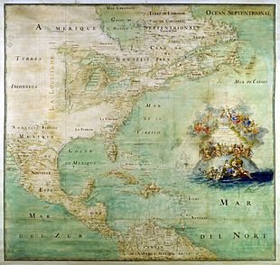
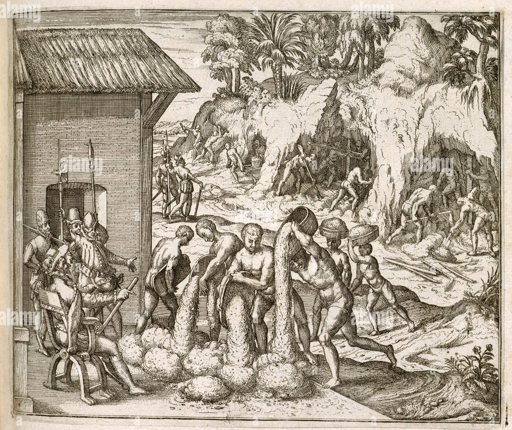
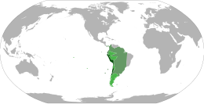

Organizzazione delle colonie e vicereami
Il colonialismo è stato un fenomeno storico di vasta portata, che ha cambiato il mondo in cui viviamo. Le colonie non erano semplici territori conquistati, ma sistemi complessi in cui si intrecciavano economia, politica e cultura.

Come funzionavano le colonie
Le colonie servivano principalmente per fornire materie prime e per vendere i prodotti della madrepatria. Spesso, i sistemi di produzione agricola e mineraria erano pensati solo per l'esportazione, trascurando i bisogni delle persone che vivevano lì. Il commercio era controllato dalla madrepatria, che decideva i prezzi e metteva tasse.
Nelle colonie, i capi erano funzionari mandati dalla madrepatria, che decidevano le leggi e come farle rispettare. Le leggi e le tradizioni del paese che aveva conquistato la colonia venivano imposte, senza tenere conto delle usanze locali. La società era divisa: i coloni europei avevano più potere, mentre le popolazioni locali o gli schiavi erano in fondo alla scala sociale.
Il colonialismo ha portato la lingua, la religione e la cultura della madrepatria nelle colonie. Però, ha anche distrutto molte culture e tradizioni locali. A volte, le culture diverse si sono mescolate, creando qualcosa di nuovo.

I vicereami
I vicereami erano un modo importante in cui la Spagna organizzava le sue colonie.
Il viceré era come un re che governava al posto del re di Spagna, con molto potere. Decideva sulla politica, l'esercito, l'economia e la religione. Aveva aiutanti locali, come le audiencias, per governare.
I vicereami erano divisi in province e distretti, ognuno con un governatore. Le città principali erano importanti per il potere politico, economico e culturale. I vicereami più importanti erano quello della Nuova Spagna, con capitale Città del Messico, e quello del Perù, con capitale Lima.

Le conseguenze del colonialismo
Il colonialismo ha avuto conseguenze molto importanti. Ha creato una grande differenza tra i paesi ricchi e quelli poveri. Ha lasciato conflitti e problemi, spesso legati all'identità e alle risorse. Ha anche cambiato la cultura mondiale, diffondendo lingue, religioni e tradizioni.
A cura di Marco Benatelli